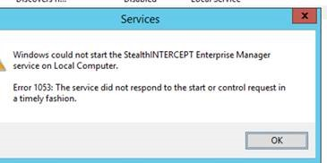

Summary: Unable to start enterprise manager as service, but able to start as an interactive application
Issue: Unable to start enterprise manager as service, but able to start as an interactive application.
In rare instances the timeout for starting the service was too low.
"Error 1053: The service did not respond to the start or control request in a timely fashion."

Instructions:
- Go to Start > Run > and type regedit
- Navigate to: HKEY_LOCAL_MACHINE\SYSTEM\CurrentControlSet\Control
- With the control folder selected, right click in the pane on the right and select new DWORD Value
- Name the new DWORD: ServicesPipeTimeout
- Right-click ServicesPipeTimeout, and then click Modify
- Click Decimal, type '180000', and then click OK
- Restart the computer
Product: StealthINTERCEPT
Versions: any
Legacy Article ID: 1605